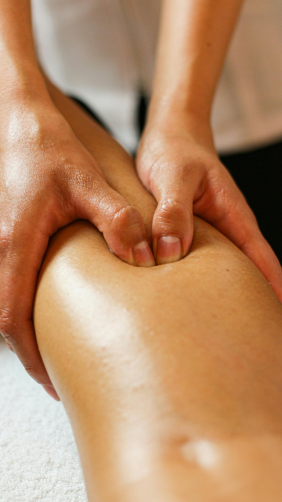

Fisioterapia general
Para dolores de espalda, contracturas, cervicalgias, lumbalgias y molestias del día a día. Terapia manual y ejercicio terapéutico.
ReservarFisioterapia personalizada en pleno Eixample de Barcelona. Diagnóstico riguroso, tratamiento manual y un plan adaptado a tu ritmo y a tus objetivos.

Una fisioterapia que escucha, evalúa y acompaña. Sin prisas, sin protocolos genéricos.
Cada lesión es única. Diseñamos un plan a medida tras una valoración completa, ajustando técnicas y ritmo a tu evolución.
Laura Martínez, colegiada nº 12.847, suma una década tratando lesiones deportivas, dolor crónico y rehabilitación post-quirúrgica.
En el corazón del Eixample, a pocos minutos de Passeig de Gràcia. Bien comunicado en metro, autobús y bici.
Estos son los servicios más solicitados en clínica. Si no sabes cuál es el tuyo, te ayudamos a elegirlo en la primera visita.
Para dolores de espalda, contracturas, cervicalgias, lumbalgias y molestias del día a día. Terapia manual y ejercicio terapéutico.
ReservarPara corredores, ciclistas y deportistas amateurs o profesionales. Recuperación de lesiones, prevención y readaptación al gesto deportivo.
ReservarRecuperación tras cirugías de rodilla, hombro, cadera o columna. Trabajamos con tu equipo médico para una recuperación segura.
Reservar"Después de meses de dolor cervical probando de todo, en cinco sesiones con Laura noté un cambio brutal. Lo mejor: que me explicó qué estaba pasando y qué hacer en casa."
"Vine con una rotura fibrilar después de la media maratón de Barcelona. La readaptación fue impecable y volví a entrenar antes de lo previsto. Profesional y honesta."
"La rehabilitación tras mi operación de menisco fue lenta, pero Laura me dio confianza desde el primer día. Hoy vuelvo a hacer Pilates sin molestias."
Queremos que llegues tranquilo y salgas con un plan claro. Esto es lo que pasará el primer día.
Hablamos de tu motivo de consulta, antecedentes médicos, hábitos y objetivos. Sin prisas y sin tecnicismos.
Exploración física, tests de movilidad, fuerza y postura. Identificamos el origen del dolor, no solo el síntoma.
Comenzamos ya con terapia manual, ejercicios o técnicas específicas según lo que la valoración haya revelado.
Te explicamos cuántas sesiones esperar, qué hacer entre visitas y cómo medir el progreso. Tú decides cómo continuar.
Fácil acceso en metro, autobús o bicicleta. Te esperamos en Carrer del Consell de Cent.
Estamos a 5 minutos a pie de Passeig de Gràcia. La clínica es accesible y tiene sala de espera tranquila.